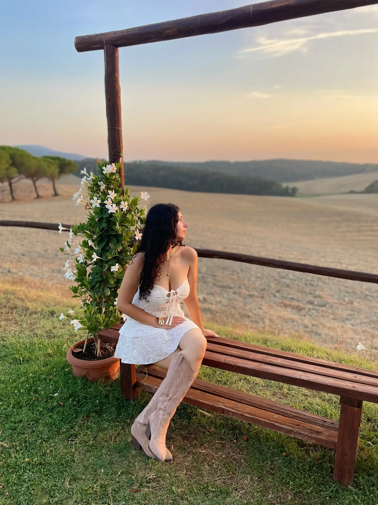
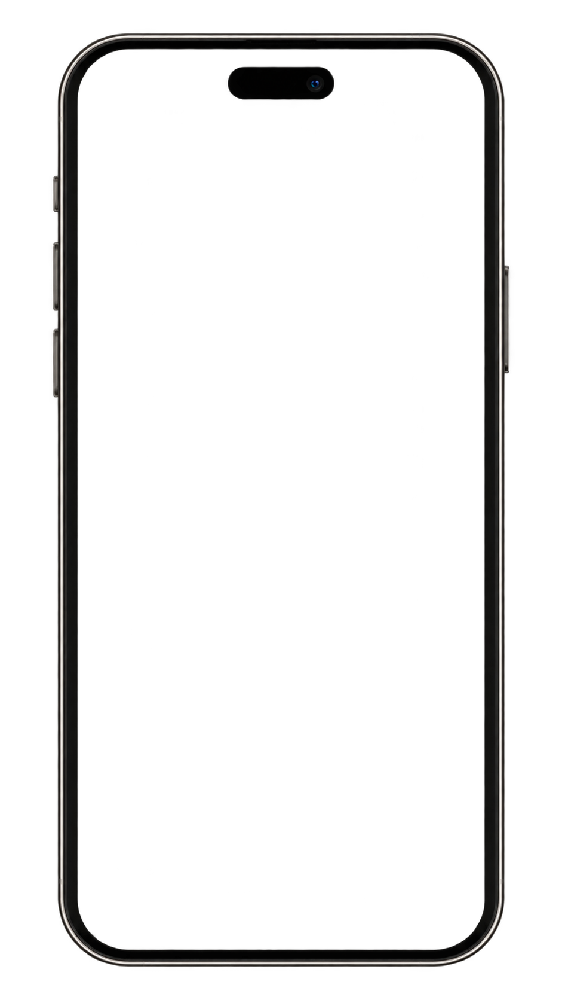

Martina
Lifestyle Content Creator
Mi piace fare video sin da quando ero piccola e li considero una sorta di diario digitale: un modo per custodire esperienze, scoperte e momenti e poterli rivivere nel tempo. Oggi desidero trasformare questa passione in un percorso professionale.
Creo contenuti principalmente dedicati a food, beauty e skincare.
Food Content

Diva Bites è il mio format dedicato al food. Racconto ristoranti, locali e realtà enogastronomiche, soprattutto in Toscana.
Vado alla ricerca di realtà che mi colpiscono per la loro cucina, ma anche per il contesto in cui si trovano e l'atmosfera che riescono a trasmettere.

Beauty & Skincare Content

Mi piace aggiornare la mia community sulle novità del mondo Beauty, andando personalmente nei negozi a scoprire le tendenze del momento.
Realizzo contenuti dedicati alla Skincare, testando personalmente nuovi prodotti, con particolare attenzione alle esigenze delle pelli sensibili e al mondo della skincare coreana.